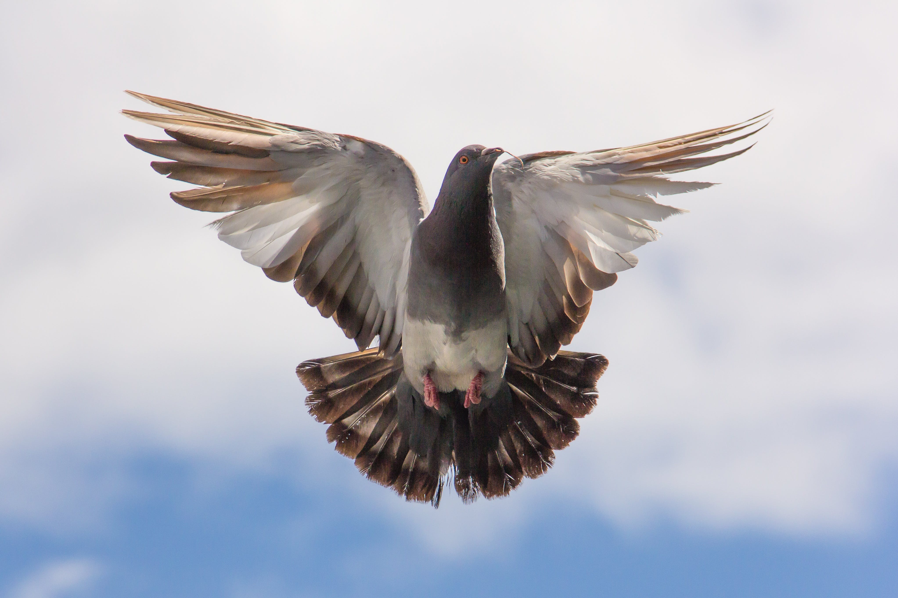
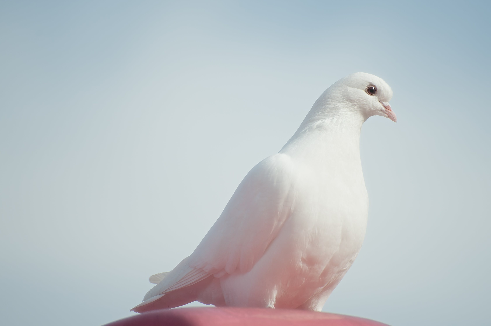
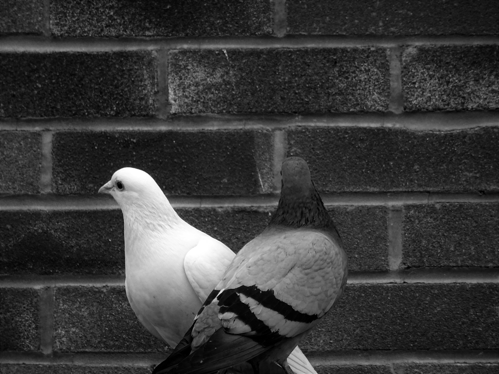

About Dove Release

Pigeons are often seen as symbols of love, faith, and unity.

The aciotn of releasing dove is a representation of freedom and
blessings.

It represents a release of the past and the beginning of a fresh
start.

In Chinese culture, it can be used to ward off evil and represent
longevity